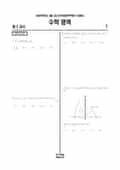

문제지

전국연합학력평가 · 시·도교육청 주관
2026년 5월 고3 학력평가 수학 1등급컷은 원점수 82점(비공식), 표준점수 최고점은 151점입니다.
원점수 1등급컷은 공식 발표값이 아니라 EBSi·입시기관 값입니다. 등급별 값은 등급컷 표, 출처 구분은 데이터 원칙에 있습니다.

시험지를 먼저 풀어 보세요. 등급컷·표준점수·난이도는 흐리게 가려 뒀어요.
| 등급 | 원점수 | 표준점수 | 백분위 |
|---|---|---|---|
| 1 | 82 | 135 | 95 |
| 2 | 73 | 128 | 88 |
| 3 | 64 | 120 | 77 |
| 4 | 47 | 105 | 60 |
| 5 | 25 | 88 | 40 |
| 6 | 14 | 81 | 23 |
| 7 | 10 | 78 | 10 |
| 8 | 5 | 76 | 3 |
등급별 컷 · 원점수는 EBSi·입시기관 값(비공식) · 만점 100점
| 등급 | 표준점수 이상 | 인원(명) | 비율 |
|---|---|---|---|
| 1 | 135 | 13,291 | 4.31% |
| 2 | 128 | 24,779 | 8.04% |
| 3 | 120 | 33,741 | 10.95% |
| 4 | 105 | 52,071 | 16.9% |
| 5 | 88 | 62,430 | 20.26% |
| 6 | 81 | 58,204 | 18.89% |
| 7 | 78 | 35,243 | 11.44% |
| 8 | 76 | 18,714 | 6.07% |
| 9 | 69 | 9,628 | 3.12% |
시·도교육청 공개 자료
출처: 시·도교육청이 공개한 전국연합학력평가 성적 분석·통계자료(공개 자료 보기).
발행 기관: 시·도교육청(전국연합학력평가). 파일 위치: 이 사이트가 보관한 사본. 저작권은 발행 기관에 있습니다. 원본과 다르거나 게시 중단이 필요하면 연락처로 알려 주세요. 등급컷 출처 구분은 데이터 원칙에서 설명합니다.
공통과목 22번(4점, 97.3%)은 지수함수 곡선 위의 두 점과 로그함수 곡선 위의 한 점이 기울기 조건과 정삼각형 조건을 만족시키도록 하는 실수의 합을 구하는 문항, 21번(4점, 87.8%)은 삼차함수로 정의한 함수가 미분가능하고 방정식의 실근의 합 조건을 만족시킬 때 값을 구하는 문항이었습니다.
객관식 15번(4점, 79.7%)은 함수의 그래프와 직선이 만나는 점의 x좌표 가운데 최솟값과 최댓값으로 정의한 함수를 다룬 문항으로 응답의 30.4%가 한 오답을 골랐고, 20번(68.8%)은 등차수열과 새로운 수열의 관계를 다룬 문항이었습니다.
확률과 통계(응시자 67.8%) 30번(97.0%)은 공과 숫자 카드를 상자에 나누어 넣는 경우의 수, 29번(86.5%)은 자연수가 적힌 의자를 원형으로 배열하는 경우의 수, 28번(79.6%)은 일대일대응과 역함수 조건의 확률을 다룬 문항이었습니다.
미적분(응시자 29.9%) 30번(94.6%)은 역함수를 갖는 삼차함수와 로그함수가 얽힌 조건 문항, 29번(85.6%)은 반원 위의 점으로 만든 삼각형의 넓이를 각의 함수로 놓고 미분하는 문항, 28번(67.3%)은 등비급수 조건 문항이었습니다. 기하(응시자 2.2%)는 30번(90.4%) 쌍곡선과 타원의 접선 문항, 28번(84.6%) 두 포물선의 교점 문항, 29번(80.8%) 정사각형과 부채꼴 위를 움직이는 두 점의 벡터 최댓값 문항이 어려웠고, 기하 28번은 응답의 46.2%가 한 오답에 몰렸습니다.
수학은 공통 22번과 선택 30번이 모두 오답률 90%를 넘는 어려운 시험이었습니다. 지수·로그함수가 함께 나오는 도형 문항은 두 함수의 대칭성을 먼저 확인하고, 경우의 수 문항은 조건을 만족하는 경우를 직접 나열해 규칙을 찾는 연습이 필요합니다.